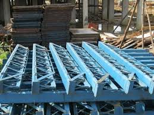

Centring Sheet Sizes Available: 600 x 900 and 600 x 1250. Provision of Angle: 35 x 35 x 5 mm thick, 30 x 30 x 3 mm thick, and 25 x 25 x 5 mm thick. weight of 2 3 centering sheet: Red Mild Steel Centering Plate, Weight: 15-20 Kg, Size: 2x3 Feet at Rs 1250/piece in Kumbakonam. A sheet of 80 gsm A3 paper will weigh 10 g, a sheet of 100 gsm A2 paper will weigh 12.5 g and a sheet of 160 gsm paper will weigh 20 g. To buy a sheet set that fits your bed perfectly you first need to measure the length, width and thickness of your mattress. The bottom sheet, in fact, must adhere completely to the mattress, while the top sheet must be slightly larger in order to wrap the bed properly

Centering span weights vary depending on the type and size of the span: Mild Steel Adjuster Type Concrete Centering Span This span weighs between 42–52 kg and is made from mild steel with a galvanized surface. Used Centering Span This span weighs 50 kg. Blue Adjustable Telescopic Spans These spans weigh an average of 42 kg and come in sizes ranging from 2.4–4.15 m. Adjustable Telescopic Span These spans come in different sizes and weights, including: 2.3 m x 2.3 m: 40 kg 2.5 m x 2.5 m: 45 kg 2 x 2 m: 35 kg
A stainless steel centering jack with dimensions of 3 x 2 mm weighs 14 kg. Here are some other jack weights: Prop jack: Weighs approximately 17.5–18 kg Jack pipe: Weighs 11 kg, 14 kg, or 20 kg Adjustable base jack: Weighs 4.20–7.36 kg, depending on the type U jack: Weighs 2.5–5 kg, depending on the size and specifications